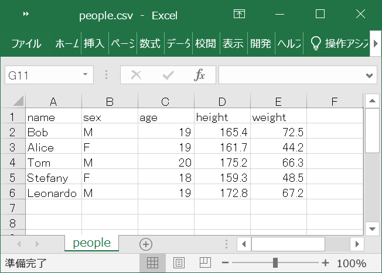

Cùng tìm hiểu về cách ghi file trong C++. Ngoài cách dùng các hàm được kế thừa từ ngôn ngữ C thì chúng ta cũng có thể ghi file trong C++ bằng các phương pháp mới được tích hợp trong header file fstream, ví dụ như sử dụng toán tử >>, hoặc là hàm write() trong C++, và bạn sẽ làm chủ được chúng sau bài học này.
Chúng ta có 2 phương pháp ghi file trong C++ bằng cách sử dụng header file fstream như sau:
- Ghi file trong C++ bằng toán tử <<
- Ghi file trong C++ bằng hàm write
Ứng dụng các phương pháp này, chúng ta cũng có thể:
- Ghi ký tự vào file trong C++
- Ghi chuỗi vào file trong C++
- Ghi mảng vào file trong C++
- Ghi cấu trúc vào file trong C++
- Ghi file CSV trong C++
Lại nữa, ngoài cách sử dụng header file fstream thì bạn cũng có thể sử dụng các hàm kế thừa từ ngôn ngữ C để ghi file trong C++.
Trước khi đọc file trong C++
Để đọc file trong C++, bạn cần phải tạo ra một stream chứa thông tin file bằng cách sử dụng class fstream hoặc ofstream mà Kiyoshi đã hướng dẫn trong bài fstream, ifstream và ofstream trong C++.
Tuy nhiên do class fstream bao gồm cả class ofstream và có khả năng vừa đọc vừa ghi file, nên thông thường chúng ta sẽ chọn class này để tạo ra stream chứa thông tin file cần đọc.
Ví dụ cụ thể, chúng ta include header file fstream và mở file trong C++ bằng ofstream như sau:
|
Sau khi đã mở file thành công bằng ifstream, một stream ofs chứa thông tin file đã được tạo ra, và lúc này chúng ta đã có thể tiến hành đọc dữ liệu từ file trong C++ bằng cách thao tác với stream này với các phương pháp sau đây:
Ghi file trong C++ bằng toán tử << trong ofstream
Toán tử << trong ofstream
Toán tử << trong ofstream được sử dụng để ghi dữ liệu vào file trong C++.
Cú pháp sử dụng toán tử << để ghi file trong C++ như sau:
ofs << data;
Trong đó ofs là luồng chứa file được tạo ra khi mở file bằng ofstream , và data là dữ liệu cần ghi vào file. Dữ liệu này có thể là một ký tự, hoặc một chuỗi trong C++.
Lưu ý, toán tử << trong ofstream chỉ có thể ghi từng ký tự hoặc từng chuỗi vào file trong C++, do đó chúng ta cần sử dụng toán tử này kết hợp với một vòng lặp để có thể ghi dữ liệu nhiều lần vào file.
Ghi từng ký tự vào file bằng toán tử <<
Chúng ta chỉ định data là một ký tự để ghi từng ký tự vào file bằng toán tử <<.
Ví dụ cụ thể, chúng ta muốn tạo file sample.txt và ghi vào file với nội dung sau đây:
123abc
Chúng ta sẽ ghi từng ký tự vào file này bằng cách sử dụng toán tử << trong C++ như sau:
|
Kết quả, file test.txt được tạo ra với nội dung như sau:
Hello |
Ghi từng dòng vào file trong C++ bằng toán tử <<
Chúng ta chỉ định data là một chuỗi ký tự để ghi từng dòng vào file trong C++ bằng toán tử <<.
Ví dụ cụ thể, chúng ta muốn tạo file sample.txt và ghi vào file với nội dung sau đây:
I am a big big girl! in a big big World
Chúng ta sẽ ghi từng dòng vào file này bằng cách sử dụng toán tử << trong C++ như sau. Lưu ý là để xuống dòng thì chúng ta cần phải ghi thêm ký tự xuống dòng vào cuối mỗi chuỗi ký tự.
|
Kết quả, file test.txt được tạo ra với nội dung như sau:
I am a big big girl! |
Ghi file trong C++ bằng hàm write trong fstream
Hàm write() trong C++
Hàm write() trong C++ là một hàm có sẵn trong thư viện chuẩn, có tác dụng ghi chuỗi vào file trong C++. Hàm write nhận địa chỉ của một chuỗi tại bộ nhớ, và ghi n ký tự được chỉ định từ chuỗi này vào trong file.
Chúng ta sử dụng hàm write trong C++ với cú pháp sau đây:
std::write (const char* s, streamsize n);
Trong đó:
slà con trỏ tới một chuỗi có ít nhất n ký tự.nlà số lượng ký tự cần lấy từ chuỗi để ghi vào file
Hàm write sẽ trả về luồng, và trong trường hợp ghi file thất bại thì hàm sẽ trả về các flags nhằm thông báo lỗi.
Cũng giống như các hàm trong thư viện chuẩn khác thì để sử dụng hàm write, chúng ta thường phải viết kèm namespace là std vào trước tên hàm như sau:
std::write(); |
Tuy nhiên chúng ta cũng có thể rút gọn tên của namespace này bằng cách chỉ định namespace đầu chương trình:
using namespace std; |
Lưu ý, hàm write chỉ có thể ghi từng dòng file trong C++, do đó chúng ta cần sử dụng hàm này nhiều lần nếu muốn ghi nhiều dòng, và đừng quên ghi thêm cả ký tự xuống dòng ở cuối chuỗi để xuống dòng trong file.
Ghi chuỗi vào file trong C bằng hàm write
Chúng ta mở file cần ghi bằng ofstream, sau đó ghi từng dòng vào file trong C++ bằng hàm write như ví dụ sau đây:
|
Kết quả, file test2.txt được tạo ra với nội dung như sau:
I am a big big girl! |
Ghi mảng vào file trong C++
Ứng dụng một trong hai phương pháp ở trên, chúng ta có thể thực hiện việc ghi mảng vào file trong C++.
Ví dụ chúng ta sử dụng vòng lặp để lấy giá trị từng phần tử, sau đó ghi vào file bằng toán tử << như sau:
|
Kết quả, nội dung mảng sẽ được ghi vào file như sau:
10 20 44 60 82 |
Một cách tương tự thì chúng ta cũng có thể ghi các mảng 2 chiều vào file trong C++. Khi đó mỗi mảng con 1 chiều trong mảng 2 chiều sẽ được coi như một dòng để ghi vào file, và chúng ta cần phải thêm ký tự xuống dòng \n khi ghi từng mảng dòng vào file như sau:
|
Kết quả, từng dòng sẽ được ghi vào file như sau:
7 9 8 |
- Xem thêm: Mảng 2 chiều trong C++
Ghi cấu trúc vào file trong C++
Một cách tương tự thì chúng ta cũng có thể thực hiện ghi cấu trúc vào file trong C++.
Do các thành viên trong cấu trúc C++ có thể có kiểu dữ liệu khác nhau, nên chúng ta cần chỉ định kiểu định dạng phù hợp cho từng thành viên để ghi giá trị của chúng từ mảng vào file bằng hàm hàm fprintf.
Ví dụ chúng ta ghi dữ liệu từ mảng cấu trúc vào file trong C++ bằng hàm fprintf như sau:
|
Kết quả, nội dung mảng cấu trúc sẽ được ghi vào file như sau:
Bob M 19 165.4 72.5 |
- Xem thêm: Kiểu cấu trúc trong C++ là gì
- Xem thêm: Mảng cấu trúc trong C++
Ghi file CSV trong C++
Ở phần trên, chúng ta đã tiến hành ghi nội dung các kiểu dữ liệu phức tạp như mảng hay cấu trúc vào file dưới dạng file txt rồi. Tuy nhiên chúng ta cũng có thể ghi dữ liệu trên vào file CSV trong C++, đơn giản bằng cách thay đổi đuôi file từ .txt sang .csv là xong.
Ví dụ cụ thể, chúng ta ghi dữ liệu từ mảng cấu trúc vào file CSV trong C++ bằng hàm fprintf như sau. Lưu ý là chúng ta cần viết định dạng các dữ liệu cách nhau bởi dấu phẩy để có thể ghi từng dữ liệu vào từng ô vào file CSV.
|
Kết quả, nội dung mảng cấu trúc sẽ được ghi vào file people.csv như sau:

Tổng kết
Trên đây Kiyoshi đã hướng dẫn các bạn về cách ghi file trong C++ rồi. Để nắm rõ nội dung bài học hơn, bạn hãy thực hành viết lại các ví dụ của ngày hôm nay nhé.
Và hãy cùng tìm hiểu những kiến thức sâu hơn về C++ trong các bài học tiếp theo.
URL Link
https://laptrinhcanban.com/cpp/lap-trinh-cpp-co-ban/file-trong-cpp/ghi-file-trong-cpp-stream/
HOME › lập trình c++ cơ bản dành cho người mới học lập trình>>27. file trong c++